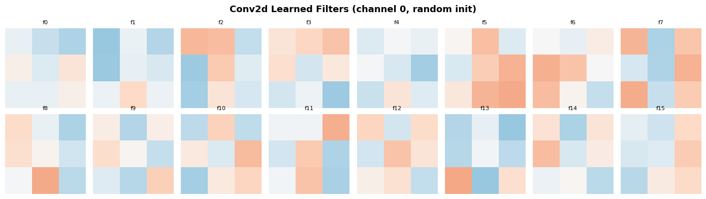
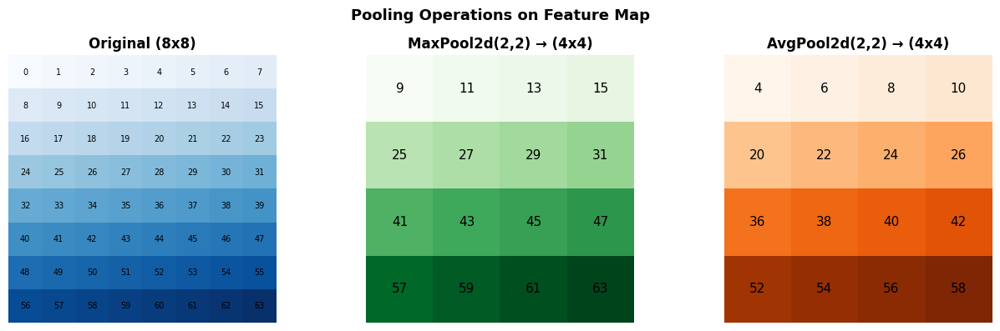
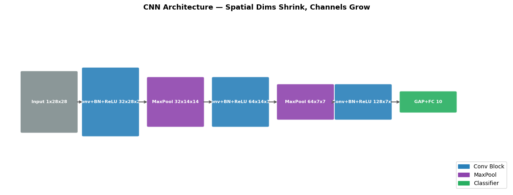
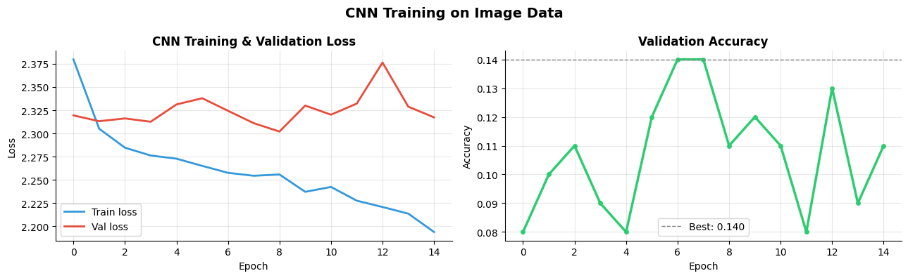

How do you build a CNN in PyTorch?#
Topics: nn.Conv2d · nn.MaxPool2d · nn.BatchNorm2d · nn.Dropout · Full CNN Architecture · Training on Image Data
1. nn.Conv2d#
What it is#
Applies a learned filter across a 2D input (image/feature map)
Input shape:
(batch, channels, height, width)— NCHW formatOutput shape depends on kernel size, stride, padding
Key parameters#
in_channels— number of input channels (3 for RGB, 1 for grayscale)out_channels— number of filters (= number of output channels)kernel_size— filter size (3 means 3×3)stride— step size (stride=2 halves spatial dimensions)padding— zeros added around input (padding=1 with kernel=3 keeps size same)
Output size formula#
H_out = (H_in + 2*padding - kernel_size) / stride + 1
Gotchas#
Data must be in NCHW format — use
.permute()ortransformsto convertpadding='same'in newer PyTorch automatically computes padding to keep size
import torch
import torch.nn as nn
import matplotlib.pyplot as plt
import numpy as np
# --- Conv2d basics ---
conv = nn.Conv2d(in_channels=3, out_channels=16, kernel_size=3, stride=1, padding=1)
print(f"Weight shape: {conv.weight.shape}") # (out_ch, in_ch, kH, kW)
print(f"Bias shape : {conv.bias.shape}") # (out_ch,)
x = torch.randn(4, 3, 32, 32) # batch=4, channels=3, H=32, W=32
out = conv(x)
print(f"Input : {x.shape}")
print(f"Output: {out.shape}") # (4, 16, 32, 32) — same H,W due to padding=1
# Output size calculations
def conv_output_size(H_in, kernel, stride, padding):
return (H_in + 2*padding - kernel) // stride + 1
for kernel, stride, padding in [(3,1,1), (3,2,1), (5,1,0), (3,1,0)]:
H_out = conv_output_size(32, kernel, stride, padding)
print(f"k={kernel}, s={stride}, p={padding} → H_out={H_out}")
# Visualize learned filters after random init
fig, axes = plt.subplots(2, 8, figsize=(14, 4))
filters = conv.weight.detach() # (16, 3, 3, 3)
for i, ax in enumerate(axes.flat):
filt = filters[i, 0].numpy() # first channel of each filter
ax.imshow(filt, cmap='RdBu_r', vmin=-0.5, vmax=0.5)
ax.set_title(f'f{i}', fontsize=8)
ax.axis('off')
plt.suptitle('Conv2d Learned Filters (channel 0, random init)', fontsize=13, fontweight='bold')
plt.tight_layout()
plt.savefig('conv_filters.png', dpi=120, bbox_inches='tight')
plt.show()
Weight shape: torch.Size([16, 3, 3, 3])
Bias shape : torch.Size([16])
Input : torch.Size([4, 3, 32, 32])
Output: torch.Size([4, 16, 32, 32])
k=3, s=1, p=1 → H_out=32
k=3, s=2, p=1 → H_out=16
k=5, s=1, p=0 → H_out=28
k=3, s=1, p=0 → H_out=30

2. Pooling, BatchNorm2d & Dropout#
nn.MaxPool2d#
Downsamples by taking max in each region
MaxPool2d(kernel_size=2, stride=2)halves H and WNo learnable parameters
nn.BatchNorm2d#
Normalizes across batch and spatial dimensions, per channel
Input:
(N, C, H, W)— normalizes each channel independentlyHas learnable gamma and beta per channel
nn.Dropout2d#
Zeros entire feature maps (channels) randomly during training
More appropriate than Dropout for CNNs — preserves spatial structure
Gotchas#
nn.Dropoutzeros individual pixels — not recommended for CNNsnn.Dropout2dzeros entire channels — correct for CNNsBatchNorm2d must know number of channels — must match
out_channelsof preceding Conv2d
import torch
import torch.nn as nn
import matplotlib.pyplot as plt
# MaxPool2d
pool = nn.MaxPool2d(kernel_size=2, stride=2)
x = torch.randn(1, 1, 8, 8)
out = pool(x)
print(f"MaxPool: {x.shape} → {out.shape}")
# BatchNorm2d
bn = nn.BatchNorm2d(num_features=16)
x = torch.randn(4, 16, 8, 8)
print(f"BN output: {bn(x).shape}")
print(f"BN weight (gamma): {bn.weight.shape}") # (16,) — one per channel
# Visualize effect of pooling on feature map
np_map = torch.arange(64).reshape(8, 8).float()
fig, axes = plt.subplots(1, 3, figsize=(13, 4))
axes[0].imshow(np_map.numpy(), cmap='Blues')
axes[0].set_title('Original (8x8)', fontsize=12, fontweight='bold')
for i in range(8):
for j in range(8):
axes[0].text(j, i, f'{int(np_map[i,j])}', ha='center', va='center', fontsize=7)
axes[0].axis('off')
pool2 = nn.MaxPool2d(2, 2)
avg_pool = nn.AvgPool2d(2, 2)
pooled_max = pool2(np_map.unsqueeze(0).unsqueeze(0)).squeeze().detach()
pooled_avg = avg_pool(np_map.unsqueeze(0).unsqueeze(0)).squeeze().detach()
axes[1].imshow(pooled_max.numpy(), cmap='Greens')
axes[1].set_title('MaxPool2d(2,2) → (4x4)', fontsize=12, fontweight='bold')
for i in range(4):
for j in range(4):
axes[1].text(j, i, f'{int(pooled_max[i,j])}', ha='center', va='center', fontsize=11)
axes[1].axis('off')
axes[2].imshow(pooled_avg.numpy(), cmap='Oranges')
axes[2].set_title('AvgPool2d(2,2) → (4x4)', fontsize=12, fontweight='bold')
for i in range(4):
for j in range(4):
axes[2].text(j, i, f'{pooled_avg[i,j]:.0f}', ha='center', va='center', fontsize=11)
axes[2].axis('off')
plt.suptitle('Pooling Operations on Feature Map', fontsize=13, fontweight='bold')
plt.tight_layout()
plt.savefig('pooling_2d.png', dpi=120, bbox_inches='tight')
plt.show()
MaxPool: torch.Size([1, 1, 8, 8]) → torch.Size([1, 1, 4, 4])
BN output: torch.Size([4, 16, 8, 8])
BN weight (gamma): torch.Size([16])

3. Full CNN Architecture#
What it is#
Stack of Conv → BN → ReLU → Pool blocks, followed by a classifier head
Feature extraction (conv layers) → Global pooling → Classification (linear layers)
Standard pattern#
Conv block:
Conv2d → BatchNorm2d → ReLU → MaxPool2dClassifier:
Flatten → Linear → ReLU → Dropout → LinearDeeper networks: more conv blocks, progressive channel increase (32→64→128)
Interview Q&A#
Why increase channels as we go deeper?
Early layers: simple features (edges) — few channels needed
Deep layers: complex features (objects) — more channels for more feature types
Spatial size shrinks (pooling), channels grow — total computation roughly constant
What is Global Average Pooling (GAP)?
Averages each feature map to a single value — replaces Flatten+Linear
nn.AdaptiveAvgPool2d(1)— works for any input sizeReduces parameters, improves generalization
import torch
import torch.nn as nn
import matplotlib.pyplot as plt
import matplotlib.patches as mpatches
# --- Full CNN ---
class CNN(nn.Module):
def __init__(self, num_classes=10):
super().__init__()
self.features = nn.Sequential(
# Block 1
nn.Conv2d(1, 32, kernel_size=3, padding=1),
nn.BatchNorm2d(32),
nn.ReLU(),
nn.MaxPool2d(2, 2), # 28→14
# Block 2
nn.Conv2d(32, 64, kernel_size=3, padding=1),
nn.BatchNorm2d(64),
nn.ReLU(),
nn.MaxPool2d(2, 2), # 14→7
# Block 3
nn.Conv2d(64, 128, kernel_size=3, padding=1),
nn.BatchNorm2d(128),
nn.ReLU(),
)
self.classifier = nn.Sequential(
nn.AdaptiveAvgPool2d(1), # global average pooling
nn.Flatten(),
nn.Linear(128, 64),
nn.ReLU(),
nn.Dropout(0.3),
nn.Linear(64, num_classes),
)
def forward(self, x):
x = self.features(x)
x = self.classifier(x)
return x
model = CNN(num_classes=10)
x = torch.randn(2, 1, 28, 28)
# Trace feature map sizes
print("Feature map sizes through CNN:")
x_trace = torch.randn(1, 1, 28, 28)
print(f" Input : {x_trace.shape}")
for layer in model.features:
x_trace = layer(x_trace)
if isinstance(layer, (nn.Conv2d, nn.MaxPool2d)):
print(f" {layer.__class__.__name__:<15}: {x_trace.shape}")
out = model(x)
print(f" Output : {out.shape}")
total_params = sum(p.numel() for p in model.parameters())
print(f"Total parameters: {total_params:,}")
# Visualize architecture
fig, ax = plt.subplots(figsize=(13, 5))
ax.set_xlim(0, 14); ax.set_ylim(0, 6); ax.axis('off')
ax.set_title('CNN Architecture — Spatial Dims Shrink, Channels Grow', fontsize=13, fontweight='bold')
blocks = [
(0.5, 'Input 1x28x28', '#7F8C8D', 2.5),
(2.2, 'Conv+BN+ReLU 32x28x28', '#2980B9', 2.8),
(4.0, 'MaxPool 32x14x14', '#8E44AD', 2.0),
(5.8, 'Conv+BN+ReLU 64x14x14', '#2980B9', 2.0),
(7.6, 'MaxPool 64x7x7', '#8E44AD', 1.4),
(9.2, 'Conv+BN+ReLU 128x7x7', '#2980B9', 1.4),
(11.0,'GAP+FC 10', '#27AE60', 0.8),
]
prev_x = None
for x_pos, label, color, width in blocks:
height = width * 0.8
rect = mpatches.FancyBboxPatch((x_pos, 3-height/2), 1.5, height,
boxstyle='round,pad=0.05', facecolor=color, edgecolor='white', linewidth=1.5, alpha=0.9)
ax.add_patch(rect)
ax.text(x_pos + 0.75, 3, label, ha='center', va='center',
fontsize=8, fontweight='bold', color='white')
if prev_x:
ax.annotate('', xy=(x_pos, 3), xytext=(prev_x + 1.5, 3),
arrowprops=dict(arrowstyle='->', color='#555', lw=1.5))
prev_x = x_pos
legend = [mpatches.Patch(color='#2980B9', label='Conv Block'),
mpatches.Patch(color='#8E44AD', label='MaxPool'),
mpatches.Patch(color='#27AE60', label='Classifier')]
ax.legend(handles=legend, loc='lower right', fontsize=10)
plt.tight_layout()
plt.savefig('cnn_architecture.png', dpi=120, bbox_inches='tight')
plt.show()
Feature map sizes through CNN:
Input : torch.Size([1, 1, 28, 28])
Conv2d : torch.Size([1, 32, 28, 28])
MaxPool2d : torch.Size([1, 32, 14, 14])
Conv2d : torch.Size([1, 64, 14, 14])
MaxPool2d : torch.Size([1, 64, 7, 7])
Conv2d : torch.Size([1, 128, 7, 7])
Output : torch.Size([2, 10])
Total parameters: 102,026

4. Training a CNN on Image Data#
What it is#
Full pipeline: load image data → transform → DataLoader → train CNN
torchvision.transformshandles image preprocessingtorchvision.datasetsprovides standard datasets (MNIST, CIFAR-10, etc.)
Key transforms#
transforms.ToTensor()— converts PIL image to tensor, scales [0,255] → [0,1]transforms.Normalize(mean, std)— standardize per channeltransforms.RandomHorizontalFlip()— data augmentationtransforms.RandomCrop()— data augmentation
Gotchas#
Always normalize with dataset statistics — use known values for standard datasets
Augmentation transforms only for training — never for val/test
ToTensor()must come beforeNormalize()
import torch
import torch.nn as nn
from torch.utils.data import DataLoader
import matplotlib.pyplot as plt
import numpy as np
# Simulate MNIST-like training (without downloading)
torch.manual_seed(42)
class FakeMNIST(torch.utils.data.Dataset):
def __init__(self, n=500, train=True):
self.X = torch.randn(n, 1, 28, 28)
self.y = torch.randint(0, 10, (n,))
def __len__(self): return len(self.X)
def __getitem__(self, i): return self.X[i], self.y[i]
train_loader = DataLoader(FakeMNIST(500), batch_size=32, shuffle=True)
val_loader = DataLoader(FakeMNIST(100, train=False), batch_size=64)
class CNN(nn.Module):
def __init__(self):
super().__init__()
self.features = nn.Sequential(
nn.Conv2d(1, 32, 3, padding=1), nn.BatchNorm2d(32), nn.ReLU(), nn.MaxPool2d(2),
nn.Conv2d(32, 64, 3, padding=1), nn.BatchNorm2d(64), nn.ReLU(), nn.MaxPool2d(2),
)
self.classifier = nn.Sequential(
nn.AdaptiveAvgPool2d(1), nn.Flatten(),
nn.Linear(64, 32), nn.ReLU(), nn.Dropout(0.3), nn.Linear(32, 10)
)
def forward(self, x):
return self.classifier(self.features(x))
device = torch.device('cpu')
model = CNN().to(device)
optimizer = torch.optim.Adam(model.parameters(), lr=1e-3)
criterion = nn.CrossEntropyLoss()
train_losses, val_losses, val_accs = [], [], []
for epoch in range(15):
model.train()
t_loss = 0
for X, y in train_loader:
X, y = X.to(device), y.to(device)
optimizer.zero_grad()
loss = criterion(model(X), y)
loss.backward()
optimizer.step()
t_loss += loss.item()
train_losses.append(t_loss / len(train_loader))
model.eval()
v_loss, correct, total = 0, 0, 0
with torch.no_grad():
for X, y in val_loader:
out = model(X.to(device))
v_loss += criterion(out, y.to(device)).item()
correct += (out.argmax(1) == y.to(device)).sum().item()
total += len(y)
val_losses.append(v_loss / len(val_loader))
val_accs.append(correct / total)
fig, axes = plt.subplots(1, 2, figsize=(13, 4))
axes[0].plot(train_losses, color='#3498DB', linewidth=2, label='Train loss')
axes[0].plot(val_losses, color='#E74C3C', linewidth=2, label='Val loss')
axes[0].set_title('CNN Training & Validation Loss', fontsize=12, fontweight='bold')
axes[0].set_xlabel('Epoch'); axes[0].set_ylabel('Loss')
axes[0].legend(fontsize=10); axes[0].grid(True, alpha=0.3)
axes[0].spines['top'].set_visible(False); axes[0].spines['right'].set_visible(False)
axes[1].plot(val_accs, color='#2ECC71', linewidth=2.5, marker='o', markersize=4)
axes[1].axhline(max(val_accs), color='gray', linestyle='--', linewidth=1,
label=f'Best: {max(val_accs):.3f}')
axes[1].set_title('Validation Accuracy', fontsize=12, fontweight='bold')
axes[1].set_xlabel('Epoch'); axes[1].set_ylabel('Accuracy')
axes[1].legend(fontsize=10); axes[1].grid(True, alpha=0.3)
axes[1].spines['top'].set_visible(False); axes[1].spines['right'].set_visible(False)
plt.suptitle('CNN Training on Image Data', fontsize=14, fontweight='bold')
plt.tight_layout()
plt.savefig('cnn_training.png', dpi=120, bbox_inches='tight')
plt.show()
print(f"Best val accuracy: {max(val_accs):.3f}")

Best val accuracy: 0.140
Interview Q&A#
Walk me through a CNN forward pass for an image.
Input (N, 3, H, W) → Conv extracts features → BN+ReLU → MaxPool shrinks spatial size → repeat → GAP → FC → class scores
Why use BatchNorm2d after Conv2d?
Normalizes feature maps → stable training → allows higher learning rates → faster convergence
What is the receptive field?
The region of the input that influences a particular neuron’s output
Grows with depth — deeper neurons see larger regions of the input
Two 3×3 convs have same receptive field as one 5×5, but fewer parameters
Gotchas#
Input must be 4D:
(batch, channels, H, W)— add batch dim with.unsqueeze(0)for single imagesnn.Flatten()must come after pooling, before Linear layersFor real MNIST: normalize with
mean=0.1307, std=0.3081